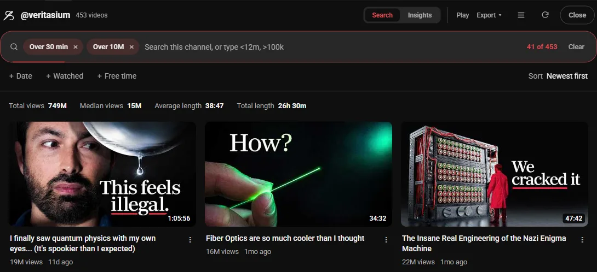
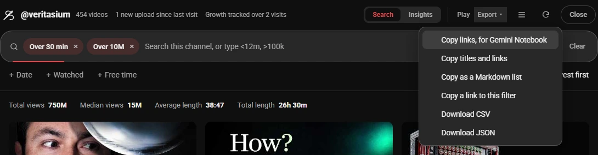

Guide 14·Channels
How to add a YouTube channel to Gemini Notebook.
Updated 16 November 2026
Short answer
Gemini Notebook (NotebookLM until July 2026) has no way to add a channel. It takes video links, and a free notebook holds 50 sources, so a channel with hundreds of videos has to be cut down first. Needle, a free Chrome extension, reads every upload on the channel, filters them by length, views, date and what you've watched, and copies the links that are left, one per line, ready to paste in as sources.
01·The problem
A channel doesn't fit in a notebook
Gemini Notebook treats each YouTube video as one source. There is no box for a channel, and a channel's link doesn't open up into its videos. So the work is choosing: which of a channel's 400 videos are worth one of your 50 places.
Most importer extensions save the typing by taking a channel's videos in the order the page lists them, newest first, until the notebook is full. That fills it with whatever was uploaded last, not with what you wanted to study.
02·Limits
How many videos a notebook holds
From Google's own plan table, checked in November 2026:
- Free: 50 sources in a notebook.
- Google AI Plus: 100.
- Google AI Pro: 300.
- Google AI Ultra: 500 or 600, depending on the plan.
Every video counts as one, however long it is. A source can run to 500,000 words, so a three-hour podcast fits as easily as a five-minute clip.
03·What counts
Which videos it can read
It reads the captions, not the picture or the sound. That rules a few things out:
- Private videos. Only public ones work.
- Videos with no captions at all. Auto-generated captions are fine.
- Videos with no speech, such as music or silent screen recordings.
- Anything uploaded in the last 72 hours, which may not be ready yet.
If a video is deleted or made private later, Google removes it from your notebook within 30 days.
04·With Needle
Pick the videos with Needle
- Open the channel's Videos tab.
- Press the needle button in the bottom right corner, or Alt+Y.
- Needle reads every upload, not only the ones on screen. Shorts are left out.
- Filter until the count above the grid is at or under what your notebook holds.
- Open Export and choose Copy links, for NotebookLM.

The menu still uses the old name. It copies one link per line and nothing else, for exactly the videos showing, in the order they're showing.

05·Filters
Filters that make it fit
Use the Length, Views, Date and Watched menus, or type in the panel's box:
>30m | Only the long ones: lectures, interviews, full episodes |
>500k | Only videos with over 500K views |
unwatched | Only what you haven't started |
-word | Leave out anything with that word in the title |
The Views menu goes up to Over 10M, and Date narrows it to recent uploads. A plain word keeps only the videos with it in the title, so typing a topic is often the quickest cut. On that Veritasium channel, >30m alone left exactly 50, a free notebook's worth.
Still over the limit? Tighten one filter: a longer length, more views, or a second word. The sort menu sets the order the links are copied in. On your own playlists and Watch Later there is also a Select button for picking videos by hand.
06·NotebookLM
Paste them into Gemini Notebook
- Open your notebook in Gemini Notebook, or make a new one.
- Select Add sources on the left and choose to add a link.
- Paste. Google's help says several links can go in together, separated by a space or a new line.
If a long paste is refused, paste it in smaller lots. Anything it skips is usually one of the cases above: no captions, private, or too new.
The same steps work on any list Needle opens on. Exporting a playlist covers playlists, Watch Later and Liked, and searching your watch history covers sending what you've already watched.
07·Questions
Questions?
Is NotebookLM the same thing as Gemini Notebook?
Yes. Google renamed NotebookLM to Gemini Notebook on 16 July 2026. Your notebooks and old links carry over.
Can I paste a channel or playlist link into a notebook?
No. It reads one video per link. A channel or playlist link is not opened up into its videos, so each video needs its own link.
Why did some videos fail to import?
Gemini Notebook works from captions. It skips private videos, videos with no captions, and often videos uploaded in the last 72 hours.
Does Needle send my links to Gemini Notebook itself?
No. Needle copies the links to your clipboard and you paste them. It has no access to your notebooks and nothing leaves your browser.
Does this work for a playlist or my Watch Later?
Yes, the same way. Open the playlist, Watch Later, Liked videos or your history, press the needle button, filter, and copy the links.